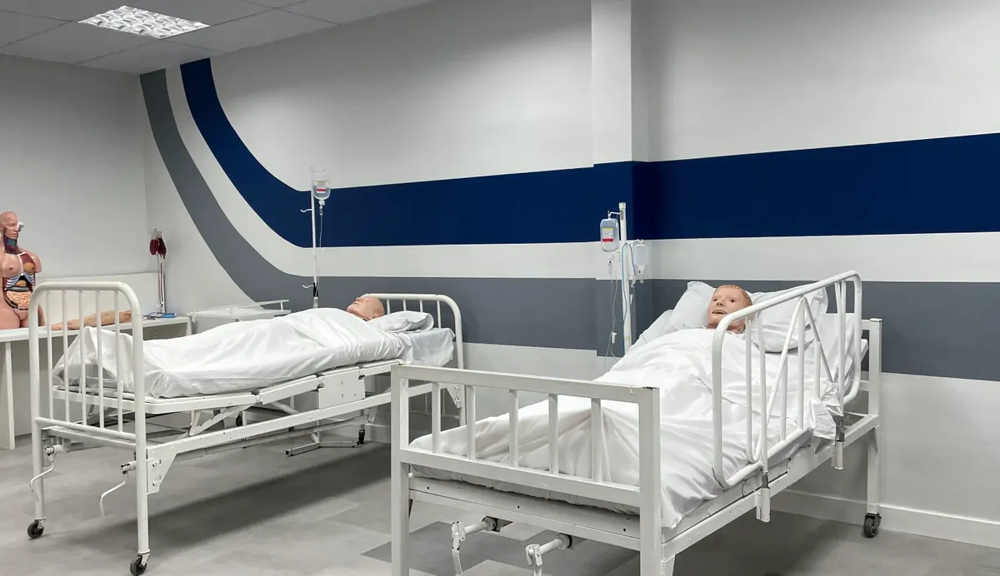
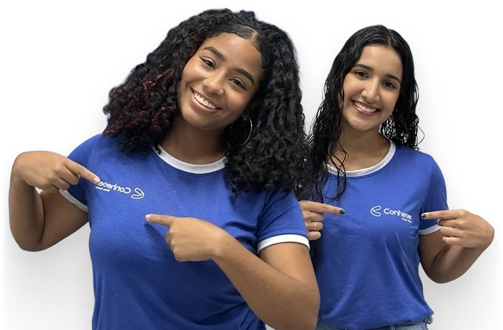

Curso técnico 100% gratuito pelo Trilhas de Futuro
Programa do Governo de Minas Gerais na Conhecer Escola Técnica. Deixe seu contato aqui antes de ir para o site oficial. A gente te acompanha em cada passo da inscrição.
Vídeo de apresentação (em produção)
Em 1 minuto: o que é o programa, quem pode participar e como a Conhecer te ajuda.
Garanta sua vaga
Preenche rapidinho. Depois disso você já segue pra inscrição oficial.
Seus dados são usados apenas para te ajudar nesta inscrição e não são compartilhados com terceiros.
Cadastro recebido!
Agora falta um passo: finalizar a inscrição oficial no site do Governo de Minas Gerais.
Na hora de escolher a instituição, procure por Conhecer Escola Técnica e a unidade que você selecionou.
Travou em alguma parte? Chama a gente no WhatsApp.
100%Gratuito, do início ao fim
R$ 20Por dia de aula, até R$ 400/mês
MECDiploma reconhecido
3Unidades na região de BH
Por que a Conhecer
Não é só aula.É prática desde o primeiro módulo.
O programa do Governo banca o curso. Estes quatro são o que a Conhecer coloca em cima disso, e é aqui que uma escola credenciada se diferencia da outra.
UTI própria
Laboratório com leitos de UTI dentro da escola. Você treina no equipamento real antes de encostar num paciente.
Estágio garantido
Em hospitais e clínicas de Belo Horizonte e região, para quem cursa Enfermagem ou Radiologia.
Mestres e doutores
Professores com titulação de mestrado e doutorado dando aula em curso técnico, não só em faculdade.
Estrutura de verdade
Salas climatizadas, laboratórios equipados e material completo. Sem improviso e sem custo extra.
Arraste para ver todos
Turma da Conhecer Escola Técnica
Onde você vai estudar
Uma escola feitapara formar na prática
Belo Horizonte, Ribeirão das Neves e Santa Luzia. Escolha a unidade mais perto de você na hora da inscrição.

Laboratório com leitos de UTISalas de aula equipadasAula prática de jalecoVisitas técnicasTurmas de todas as idades

Quem já está dentro
Arraste para ver a escola
Áreas de formação
Escolha a área queabre as portas do seu futuro
A Conhecer forma técnicos em quatro grandes áreas. Os cursos ofertados pelo Trilhas de Futuro saem no edital de cada edição.
Saúde
Enfermagem, Radiologia, Análises Clínicas, Cuidador de Idosos
Gestão e Negócios
Administração, Logística, Contabilidade, Vendas
Tecnologia
Desenvolvimento de Sistemas, Informática, Redes, Jogos Digitais
Segurança
Segurança do Trabalho
Arraste para ver todas as áreas
Os cursos disponíveis variam por unidade e por edição do programa. Cadastre-se e a gente te avisa assim que a lista da sua unidade sair.
Depoimentos
Quem conhece, confia
Alunos da Conhecer contando como foi, na voz deles.
Arraste para ver todos
Passo a passo
Como funcionaa sua inscrição
A inscrição oficial é no site do Governo de Minas. Preenchendo o formulário aqui primeiro, alguém da nossa equipe te acompanha em cada etapa.
Cadastre seu contato aqui. Assim já ficamos de prontidão pra te ajudar.
Acesse o site oficial do Trilhas de Futuro. O link aparece assim que você preencher o formulário.
Na hora de escolher a instituição, procure por "Conhecer Escola Técnica" e selecione a unidade mais perto de você.
Escolha o curso e confirme seus dados pessoais.
Pronto. Se travar em qualquer parte, chama a gente no WhatsApp.
Tirando dúvidas
Perguntasfrequentes
O curso é mesmo gratuito?
Sim, do início ao fim. Não tem taxa de inscrição, matrícula nem mensalidade. Apostilas, material didático, uniforme e squeeze também são gratuitos.
Quem pode se inscrever?
Os pré-requisitos são definidos no edital de cada edição. Cadastre-se que a gente te avisa com as regras exatas assim que saírem.
Existe algum auxílio financeiro?
Sim: R$ 20 por dia de aula presencial, para transporte e alimentação, o que pode chegar a R$ 400 por mês. O pagamento é feito pelo programa e depende da sua frequência nas aulas, conforme as regras do edital.
Onde ficam as unidades da Conhecer?
São três, na região de Belo Horizonte: BH (Rua dos Caetés, 123, Centro), Ribeirão das Neves (Av. Dionísio Gomes, 159, Veneza) e Santa Luzia (R. Ataláia, 37, São Benedito).
E se eu travar no meio da inscrição?
É só chamar no WhatsApp, no botão verde do canto da tela, que alguém da nossa equipe te ajuda ao vivo.